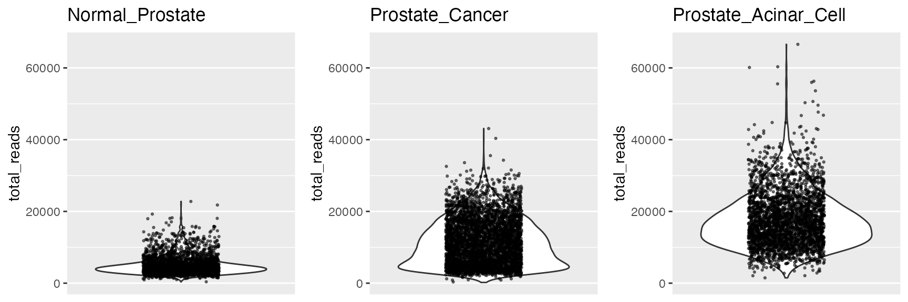
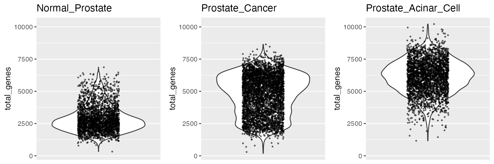
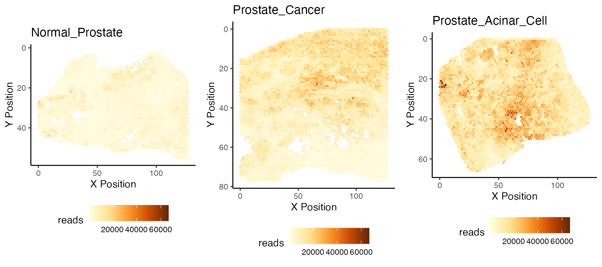
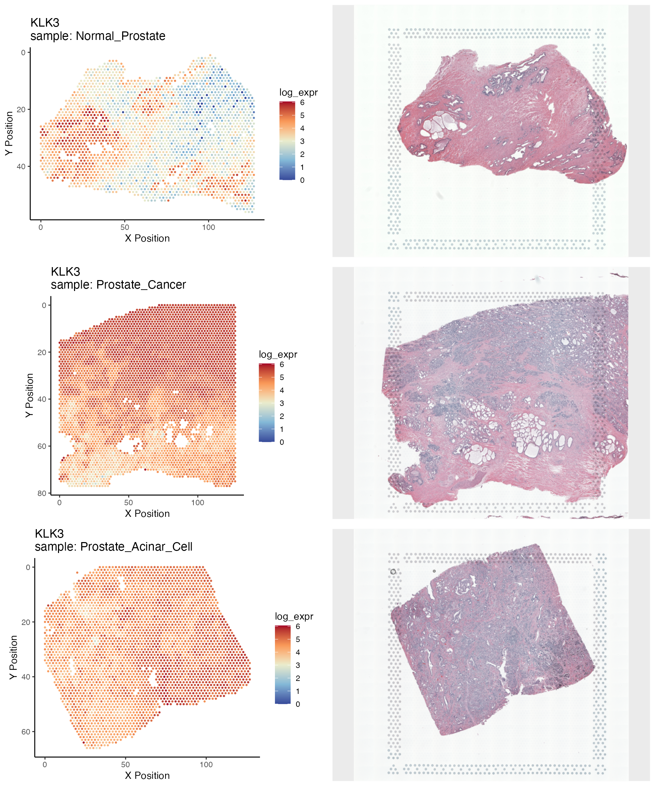
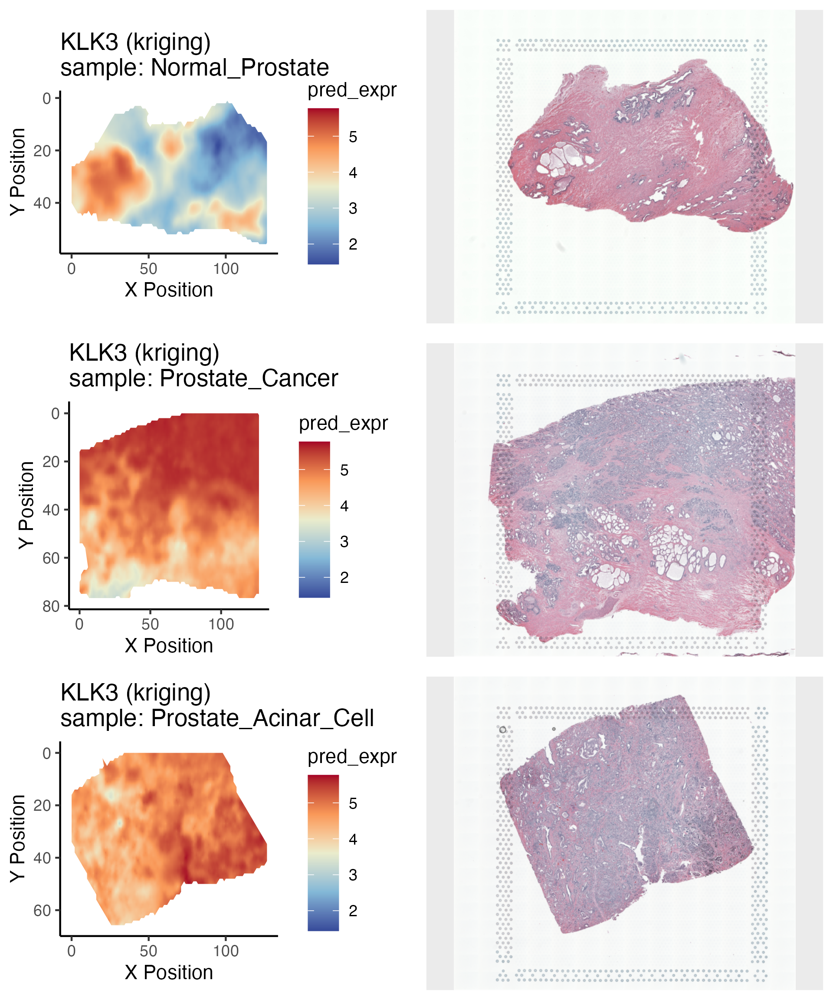
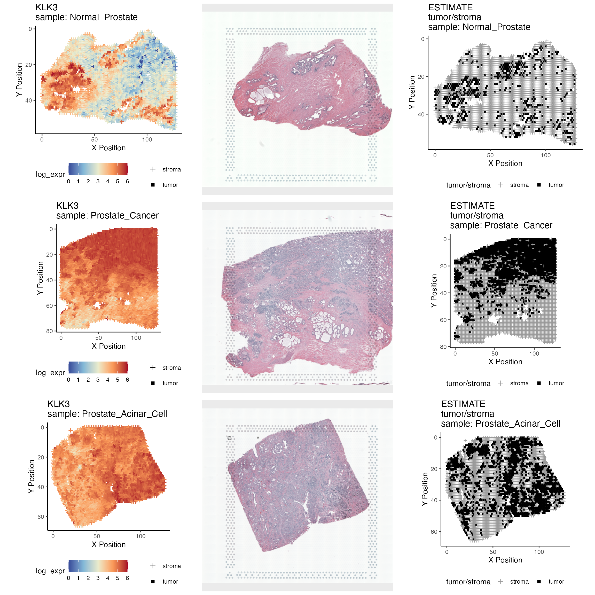

prostatecancer_Visium_vignette.RmdThe package spatialGE provides a set of tools for the visualization of spatially-resolved transcriptomics. In this vignette we explore gene expression in two 10X Visium samples: A normal prostate tissue and a prostate adenocarcinoma sample. These data sets were generated with the Visium FFPE technology, but the instructions in this vignette can be used with other Visium data sets. Here we introduce the Python implementation of kriging in spatialGE. We use PyKrige to generate transcriptomic surfaces in order to reduce run time of the spatial interpolation. Nonetheless, kriging is a computationally expensive procedure, and even though PyKrige results in ~3X increases in speed, the interpolation of a Visium data set (~3,000-4,000 spots) takes some time.
spatialGE uses reticulate to bridge with the Python module PyKrige. To do this, a Python environment needs to be set up. We recommend installing Anaconda and create a dedicated environment (r-reticulate in this example), then install PyKrige within that environment. Next, the path to the Python environment needs to be set up for R to find it. The set up is done in the .Renviron file. On Mac OS, this is done by typing in the Terminal:
echo "RETICULATE_PYTHON=\"$HOME/opt/anaconda3/envs/r-reticulate/bin/python3\"" >> ~/.RenvironThe data sets are publicly available and can be downloaded from the 10X Resources website. Do a search for “prostate” and click on “Spatial Gene Expression”, and the “Visium Spatial for FFPE Demonstration (v1 Chemistry)”. For this vignette, we will use the normal, adenocarcinoma/invasive carcinoma, and acinar cell carcinoma samples. At this point, users may be asked to register to download the data. Before downloading the data, create three folders on your computer’s desktop. We have named these folders: Visium_FFPE_Human_Normal_Prostate, Visium_FFPE_Human_Prostate_Acinar_Cell_Carcinoma, and Visium_FFPE_Human_Prostate_Cancer. Please proceed to download the files listed in the output section of the 10X website, and place them in their respective folders in your computer’s desktop.
Once the data download is completed, decompress the *_filtered_feature_bc_matrix.tar.gz files from each sample. In MacOS, double clicking each file decompresses the files and produces the folder filtered_feature_bc_matrix. Repeat the procedure for the *_spatial.tar.gz files (which will produce the spatial folder).
The spatialGE repository is available at GitHub and can be installed via devtools. To install devtools, in case is not installed in your R console, please run the following code:
if("devtools" %in% rownames(installed.packages()) == FALSE) {
install.packages("devtools")
}After making sure devtools is installed, proceed to install spatialGE:
# devtools::install_github("fridleylab/spatialGE")To use spatialGE, load the package using the command:
library('spatialGE')Raw data and results from analyses are stored in an STList (S4 class object). The STList can be created with the function STList(), and in the case of Visium data, only the file paths to the Visium folders need to be provided. Each folder must contain at least two subfolders: filtered_feature_bc_matrix and spatial. The filtered_feature_bc_matrix contains the files features.tsv.gz, barcodes.tsv.gz, and matrix.mtx.gz. The spatial folder contains tissue_positions_list.csv and stained tissue images (e.g., H&E images).
The user also provides sample IDs partially matching names of the folders. Optionally, the Visium folders can be provided in the second column of the sample metadata file along with clinical/phenotype data associated with each spatial array. We do not have metadata available for the Visium data used in this vignette, thus, we will provide only sample IDs.
Assuming the user created folders with using the instructions in this vignette (see Data acquisition), the output files are specified like so:
visiumfp <- c('~/Desktop/Visium_FFPE_Human_Normal_Prostate/',
'~/Desktop/Visium_FFPE_Human_Prostate_Cancer/',
'~/Desktop/Visium_FFPE_Human_Prostate_Acinar_Cell_Carcinoma/')Appropriate sample IDs could be:
visiumIDs <- c('Normal_Prostate',
'Prostate_Cancer',
'Prostate_Acinar_Cell') Then, we load the file paths and sample IDs to the STList function.
prvisium <- STList(rnacounts=visiumfp, samples=visiumIDs)
#> Loading required package: magrittr
#> Found Visium Data.
#> Found 3 Visium Samples
#> Completed!
#> Requested 3 Samples
#> Cleaning Count and Coordinate Data Gene Names.
#> Converting Counts to Sparse Matrices
#> Completed STList!The prvisium object is an STList.
prvisium
#> Spatial Transcriptomics List (STList).
#> 3 spatial array(s):
#> Normal_Prostate
#> Prostate_Cancer
#> Prostate_Acinar_CellAs with other omics data, examination of its quality is crucial to extract a meaningful biological signal. Similar to scRNAseq data, we can examine the number of total counts.
qcplots1 = plot_QC_stats(prvisium, qc='total_reads')
#> Loading required package: ggplot2
#> Loading required package: Matrix
#> Warning: Removed 1 rows containing missing values (geom_point).
qcplots1
qcplots2 = plot_QC_stats(prvisium, qc='total_genes')
#> Warning: Removed 1 rows containing missing values (geom_point).
qcplots2
We can also plot these numbers spatially, and to generate an organized layout, we use ggarrange():
qcplots3 = plot_QC_quilt(prvisium, nreads=T)
ggpubr::ggarrange(plotlist=qcplots3, ncol=3, nrow=1, legend='bottom')
We can filter out spots with low counts (<200). We also see a few spots with unusually high count in the acinar cell cancer sample. We can filter spots using the filter_data() function.
prvisium = filter_data(prvisium, spot_maxreads=50000)Many transformation methods are available for both bulk and single-cell RNA-Seq count data. In spatialGE, the function spatialTransform() applies log-transformation to the data, after library size normalization. Similar to Seurat, it applies a scaling factor (scale_f=10000 by default). spatialGE borrows methods from the field of spatial statistics, often requiring gaussian-shaped data distributions. Hence, users also can apply voom transformation, which could in certain situations, provide more gaussian-shaped distributions than log-transformed data.
prvisium <- spatialTransform(prvisium)We can plot now the gene expression levels of specific genes. When created from Visium outputs or Seurat objects, STLists contain image data as well. We can plot the images along with quilt plots by setting image=T. Let’s create plots for KLK3:
qplot <- plot_gene_quilt(prvisium, genes='KLK3', color_pal='sunset', image=T)The plot_gene_quilt returns a list of plots. We can use ggarrange() to diplay these plots in an organized manner:
ggpubr::ggarrange(plotlist=qplot, ncol=2, nrow=3)
We can also generate transcriptomic surfaces for the samples using the gene_krige() and setting python=T to use the PyKrige implementation.
prvisium <- gene_krige(prvisium, genes='KLK3', univ=F, python=T)As mentioned at the beginning of this vignette, we have leveraged the reticulate package to benefit from the speed that python can bring to computationally expensive functions. For Kriging, we pass in our STList, the same gene name that we were interested in before ( KLK3 ), univ is a parameter letting us decide between universal kriging or ordinary kriging (universal takes spatial trends into account, but takes much longer to do. Here we have it perform ordinary with univ=F.
We can now plot the transcriptomic surfaces.
kplot <- plot_gene_krige(prvisium, genes='KLK3', color_pal='sunset', image=T)
#> Loading required namespace: rgeos
ggpubr::ggarrange(plotlist=kplot, ncol=2, nrow=3)
As expected, the expression of KLK3, known as prostatic antigen, is higher across the the cancerous samples (middle and bottom), compared to the normal sample (top).
We can also classify spots as likely tumor or likely stroma using the spatialDeconv() function. spatialGE uses ESTIMATE to calculate tumor purity scores, followed by model-based clustering (mclust). Notice that we set method='none', in order to avoid computing xCell scores for the purpose of this example. Users are encouraged to remove that argument and get cell scores.
prvisium <- spatialDeconv(prvisium, method="none")
#> This will take some time...
#> Loading required package: estimate
#> Only ESTIMATE was applied to the spatial arrays.We can now plot the spot classification along side the expression plot and the H&E image.
eplot <- plot_gene_quilt(prvisium, genes="KLK3", color_pal="sunset", purity=T, image=T, ptsize=1)
ggpubr::ggarrange(plotlist=eplot, ncol=3, nrow=3, legend='bottom')
Note that the normal prostate sample has a spots classified as tumor (dark squares). This is an artifact resulting from the model-base clustering performed by spatialGE, which fits ESTIMATE purity scores into two groups (k=2).
Session Info
sessionInfo()
#> R version 4.0.3 (2020-10-10)
#> Platform: x86_64-apple-darwin17.0 (64-bit)
#> Running under: macOS Catalina 10.15.7
#>
#> Matrix products: default
#> BLAS: /Library/Frameworks/R.framework/Versions/4.0/Resources/lib/libRblas.dylib
#> LAPACK: /Library/Frameworks/R.framework/Versions/4.0/Resources/lib/libRlapack.dylib
#>
#> locale:
#> [1] en_US.UTF-8/en_US.UTF-8/en_US.UTF-8/C/en_US.UTF-8/en_US.UTF-8
#>
#> attached base packages:
#> [1] stats graphics grDevices utils datasets methods base
#>
#> other attached packages:
#> [1] mclust_5.4.7 estimate_1.0.13 Matrix_1.3-2
#> [4] ggplot2_3.3.5 magrittr_2.0.1 spatialGE_0.0.0.9000
#>
#> loaded via a namespace (and not attached):
#> [1] sass_0.3.1 tidyr_1.1.2 jsonlite_1.7.2 carData_3.0-4
#> [5] bslib_0.2.4 assertthat_0.2.1 sp_1.4-5 highr_0.8
#> [9] cellranger_1.1.0 yaml_2.2.1 pillar_1.4.7 backports_1.2.1
#> [13] lattice_0.20-41 glue_1.4.2 digest_0.6.27 ggsignif_0.6.1
#> [17] snakecase_0.11.0 khroma_1.6.0 colorspace_2.0-0 cowplot_1.1.1
#> [21] htmltools_0.5.1.1 pkgconfig_2.0.3 raster_3.4-5 broom_0.7.4
#> [25] haven_2.3.1 purrr_0.3.4 scales_1.1.1 openxlsx_4.2.3
#> [29] rio_0.5.16 tibble_3.0.6 generics_0.1.0 farver_2.0.3
#> [33] car_3.0-10 ellipsis_0.3.1 ggpubr_0.4.0 cachem_1.0.1
#> [37] withr_2.4.1 janitor_2.1.0 crayon_1.4.1 readxl_1.3.1
#> [41] memoise_2.0.0 evaluate_0.14 fs_1.5.0 rstatix_0.7.0
#> [45] forcats_0.5.1 foreign_0.8-81 textshaping_0.3.4 tools_4.0.3
#> [49] data.table_1.13.6 hms_1.0.0 lifecycle_1.0.0 ggpolypath_0.1.0
#> [53] stringr_1.4.0 V8_3.4.0 munsell_0.5.0 zip_2.1.1
#> [57] compiler_4.0.3 pkgdown_1.6.1 jquerylib_0.1.3 concaveman_1.1.0
#> [61] systemfonts_1.0.2 rlang_0.4.10 grid_4.0.3 labeling_0.4.2
#> [65] rmarkdown_2.10 codetools_0.2-18 gtable_0.3.0 abind_1.4-5
#> [69] DBI_1.1.1 curl_4.3 R6_2.5.0 lubridate_1.7.9.2
#> [73] knitr_1.31 dplyr_1.0.3 rgeos_0.5-5 fastmap_1.1.0
#> [77] rprojroot_2.0.2 ragg_1.1.2 desc_1.2.0 stringi_1.5.3
#> [81] parallel_4.0.3 Rcpp_1.0.6 vctrs_0.3.6 png_0.1-7
#> [85] tidyselect_1.1.0 xfun_0.25